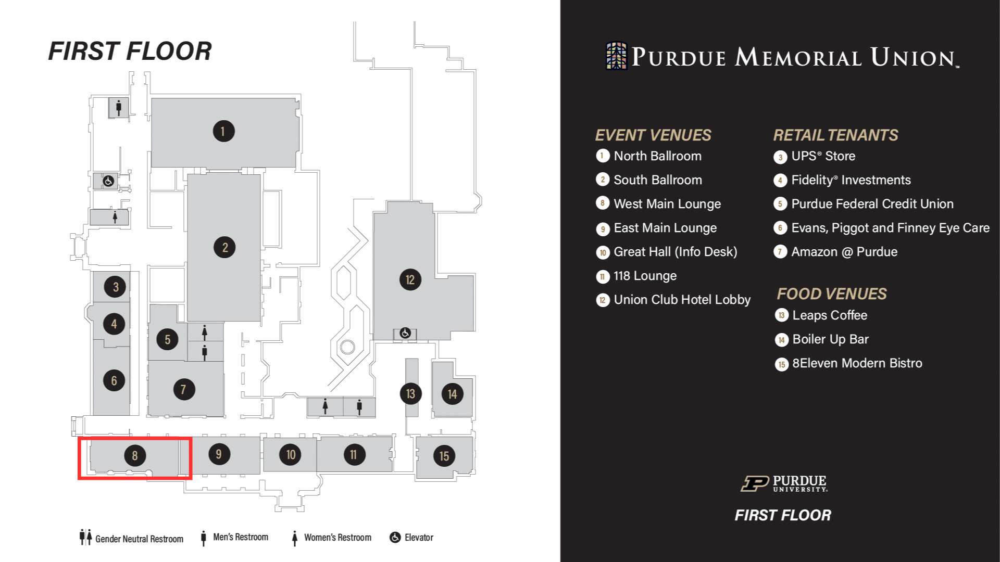

College of Science Career Fair - Students
Connect and network with employers to find internships and full-time positions in your field!
RSVP for the Career Fair here.
Date: September 25, 2023
Time: 12:00 - 4:00 PM
Location: West Main Lounge @ Purdue Memorial Union, 101 Grant St, West Lafayette, IN 47906
Targeted majors: Biology, Chemistry, Atmospheric Science, Environmental Geoscience, Geology and Geophysics, and Planetary Science.
Questions? Contact us at pssccareerfair@gmail.com with questions, inquiries, and concerns.
FAQs
When is the College of Science Career Fair?
The fair is September 25th from 12-4 PM EST. Employers can begin setting up at 11:00 AM EST.
Where will the fair be held?
The College of Science Career Fair will be held at the Purdue Memorial Union in the West
Main Lounge. This is located on the first floor of the Union across from Amazon @ Purdue.
Below is a map of the first floor of the Union.

What should I expect when I get to the fair?
Each company will be stationed at a booth with representatives. Students will approach
the representatives, introduce themselves, present their resumes, and discuss
opportunities at the company. Students can make connections, learn more about employment
positions, and find out what companies are looking for. Many representatives bring
materials about the company for students to review at a later time. Career fairs are a
great opportunity for students at any point in their academic career and we encourage
everyone to come.
How should I prepare for the fair?
Create and update your resume. An effective resume should be clear and concise by
highlighting relevant skills and achievements. You should emphasize relevant
coursework, experience, projects and activities, and awards. The CCO has in-depth tips to
help you write your resume and examples of
successful resumes. You can also go to the CCO for a quick, 15-minute chat
to review your resume. This can be scheduled through BoilerConnect through the
“Career/Pre-Professional Advising” appointment option and choosing the service as
“Resume/CV Review” under CCO/Quick Chat. Other resources include Upkey, which is a great option to
help you create your first resume, and VMock, a tool to refine your resume
drafts.
Get to know the attending companies. Before the fair, learn about the companies through their website so you know which ones you want to speak with the most. You should learn more about the roles and responsibilities of a position you are interested in. As you speak to the representatives, let them know what you were most excited to learn. This will show the companies that you are invested in their company and enthusiastic about working for them.
Create an elevator pitch. These pitches are usually a minute long and prioritize the important information about you. An elevator pitch is a brief introduction of who you are, your accomplishments and skills, and what your professional goals are.
Introduction: Include your name, your area of study, and your year in school. Accomplishments and skills: Include projects, internships, research, service, and leadership. Relate the skills you've learned from these experiences to the responsibilities of the position you are interested in.
Professional goals: Highlight what kind of roles you are interested in, as well as internships or jobs.
Practice as much as much as you can so it becomes second nature. Carnegie Mellon University has quick tips about elevator pitches with examples of pitches tailored toward career fairs.
For a comprehensive review of career fair preparation, visit the CCO Career Success Handbook.
Get to know the attending companies. Before the fair, learn about the companies through their website so you know which ones you want to speak with the most. You should learn more about the roles and responsibilities of a position you are interested in. As you speak to the representatives, let them know what you were most excited to learn. This will show the companies that you are invested in their company and enthusiastic about working for them.
Create an elevator pitch. These pitches are usually a minute long and prioritize the important information about you. An elevator pitch is a brief introduction of who you are, your accomplishments and skills, and what your professional goals are.
Introduction: Include your name, your area of study, and your year in school. Accomplishments and skills: Include projects, internships, research, service, and leadership. Relate the skills you've learned from these experiences to the responsibilities of the position you are interested in.
Professional goals: Highlight what kind of roles you are interested in, as well as internships or jobs.
Practice as much as much as you can so it becomes second nature. Carnegie Mellon University has quick tips about elevator pitches with examples of pitches tailored toward career fairs.
For a comprehensive review of career fair preparation, visit the CCO Career Success Handbook.
I'm an international student, how should I
prepare?
We are bringing in a wide range of companies who greatly appreciate the diverse
perspective you may bring. To maximize experience at the fair, your resume
should meet U.S. resume standards and state your work authorization. Before the
fair, learn about the attending companies and see if they hire international
students. Handshake
allows you to filter companies by work authorization and MyVisaJobs allows you to find
companies that sponsor visas.
What should I do during the fair?
Bring approximately 20 copies of your resume to give recruiters.
Get to know where organizations are located and which ones you want to talk
with first.
Deliver your elevator pitch! Confidence is key.
Remain professional when talking with professionals, recruiters, and peers.
Remember, this is the first impression recruiters will have of you.
Show interest in organizations that you are talking with, even if they were
not on your list. Broaden your horizons and keep an open mind.
Build your professional network by talking with companies that interest you
and any company that shows interest in you. Ask for a business card!
How should I dress for the fair?
Students should aim to impress the recruiters, and that starts with
attire. The College of Science Career Fair is a professional event, so
students should wear business attire if they can. This dress code can
range from “business casual” to “business professional.” If you do not
own professional attire, the Center for Career Opportunities has free
professional attire for students called the CCO
Career Closet. Additionally, Indeed
differentiates types of business attire for ease of mind when choosing
an outfit. Feel free to express your identity, just make sure it looks
professional!
What should I do after the fair?
After the fair, follow up with companies and/or contacts within 24
hours of interaction to reinforce the connection and your interest.
This will help you stand out and help recruiters remember you. The
Muse and Indeed
have great tips for sending a follow-up email after career fairs. Be
sure to follow any steps that recruiters recommend, such as applying
for a position or contacting someone in the company. Connect with
newly created or formerly established contacts on LinkedIn.
What is the best way to contact
PSSC in case of questions?
If you have any questions, feel free to email us at pssccareerfair@gmail.com.